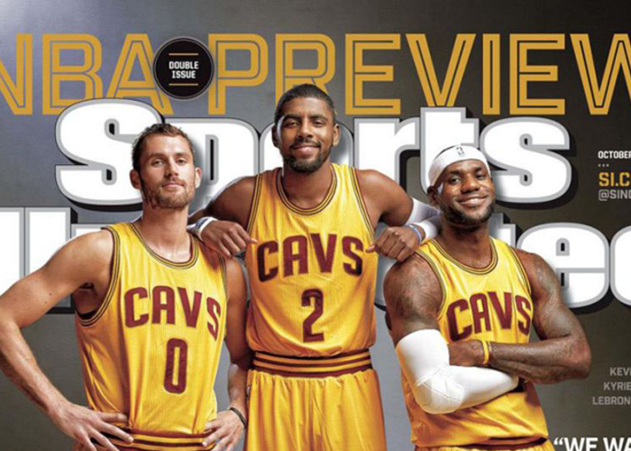
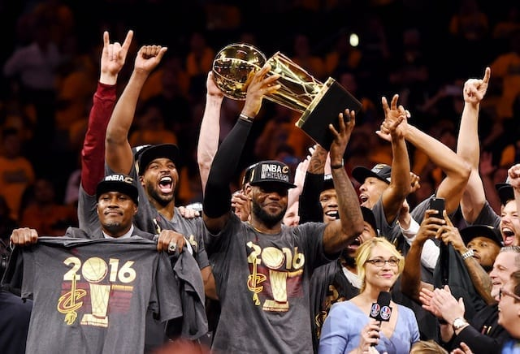

Après la saison 2013-2014 Lebron James est un agents libre il décide donc de se rediriger vers sa franchise de coeur Cleveland. Avant le début de la saison le satff des Cavaliers font tout pour bien l'entourer: après avoir drafté un jeune meneur talentueux deux saison aupparavant Kyrie Irvung, le manager monte un trade avec la franchise de Minnesota pour récupérer Kevin Love un joueur de calibre all star. Ainsi Cleveland forme un big three et observe le retour de l'enfant prodige, "The choosen one": Lebron James.

Durant la saison Lebron James connaît sa première vrai blessure qui l'éloigne des parquets pendant 2 semaines une première pour lui a l'époque. Il fini la saison avec 69 matchs joué et avec des bonnes statistiques: 25.3 points, 6 rebonds et 7.4 passses décisives en moyenne par match. Bien sur les Cavaliers se qualifient en playoff, au second tour ils affrontent les Bulls de Chicago, la série fut accroché, mais Cleveland l'emporte notamment grâce à un buzzer de Lebron James dans le match 4 qui permet a Cleveland de revenir a 2 partout. En finale de conférence ils affrontent les Hawks d'Atlanta et l'emporte facilement. Cela leur perme d'accéder à la finale NBA dès la saison du retour de Lebron James. Ainsi Lebron James devient le premier joueur depuis 1960 à jouer 5 finales NBA consécutives. Pour cette finale ils doivent se confronter à Warriors de Golden State. Après les blessures de Kyrie et de Love, Lebron James se retrouve seul. Il ouvre les hostilité et remporte deux des trois premiers matchs. Malheuresement ses 35.8 points, 13.3 rebonds et 8.8 passses décisives ne lui permettent pas de conduire Cleveland à vers son premier titre de NBA. Les Cavs perdent la série en 6 matchs.
Lors de la saison suivante 2015-2016 Lebron James est largement critiqué notamment à cause de son comportement envers le coach de Cleveland David Blatt, néanmois les Cavs finissent la saison avec le meilleur bilan de la conférence Est avec 57 victoires. Lebron James fini la saison avec 25.3 points, 7.4 rebonds, 6.8 passes décisovces et 52% de réussite au shoot en moyenne par match. Lebron James et ses coéquipiers se qualifièrent bien évidemment en playoff et perdère seulement deux matchs avant les finales NBA. En finale, nous assistons à une revanche de l'année précédente entre la meilleur équipe de la conférence Est CLeveland et la meilleur équipe de la NBA qui a battu le record de victoires cette saison là ( avec 73 victoires) Golden State. Après un début de série compliqué les Cavs sont menés 3-1 ce qui signifie que le prochain match perdu est synonyme de défaite sur la série. Mais Lebron James ne l'entend pas de cette oreille après deux matchs en back to back à plus de 41 points il rammène les Cavs à 3 partout et oblige un match 7. Pour le match 7 il enregistre un triple double et surtout un des contres les plus important de l'histoire sur Andre Iguadola. De ce fait les Cavs remporte le titre de champion NBA pour la première fois de leur histoire. Lebron James est logiquement élu MVP des finales avec 29.7 points, 11.3 rebonds, 8.9 passes décisives, 2.3 contres, et 2.6 interceptions de moyenne par match. Ainsi il gagne sont 3ème titre NBA ainsi que sont 3 ème trophé de MVP des finales: cette fois ci il est élu à l'hunanimité et devient le premier joueur à réussir cela.

Après cette incroybel action, un ancien joueur NBA présent sur le bord du terrain la décrit, Richard Jefferson dit: "j'ai joué des milliers de matchs de basket dans ma vie mais je n'ai jamais rine vu de telle. C'est impossible ce mec n'est pas humain! Quand j'ai vu la contre attaque déboulé je me suis dit c'est foutu ils sont trop loin mais là au moment ou Iggy (surnom de Iguadola) monte au cercle... un flash! une ombre noir! J'en ai vu des trucs de dingues mais ce qu'a fait Lebron James casse les lois de la physique, tellement cette prouesse athlétique est unique".
Lebron a enfin réussi son objectif de toujours apporté un titre de champion NBA à l'équipe qui la drafté, l'équipe de sa ville, l'équipe de son coeur.